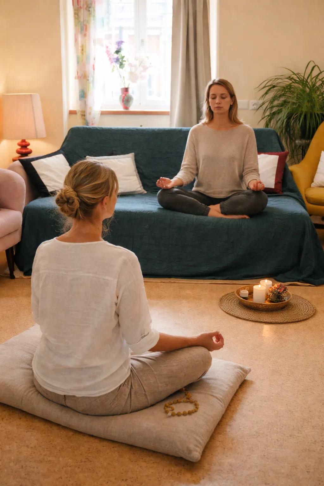
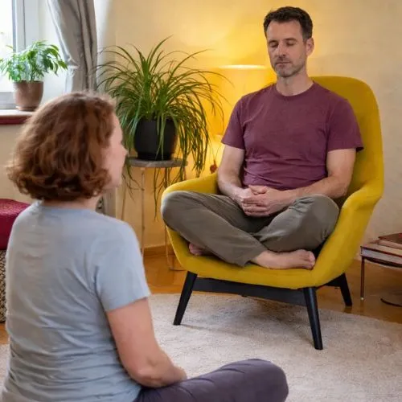
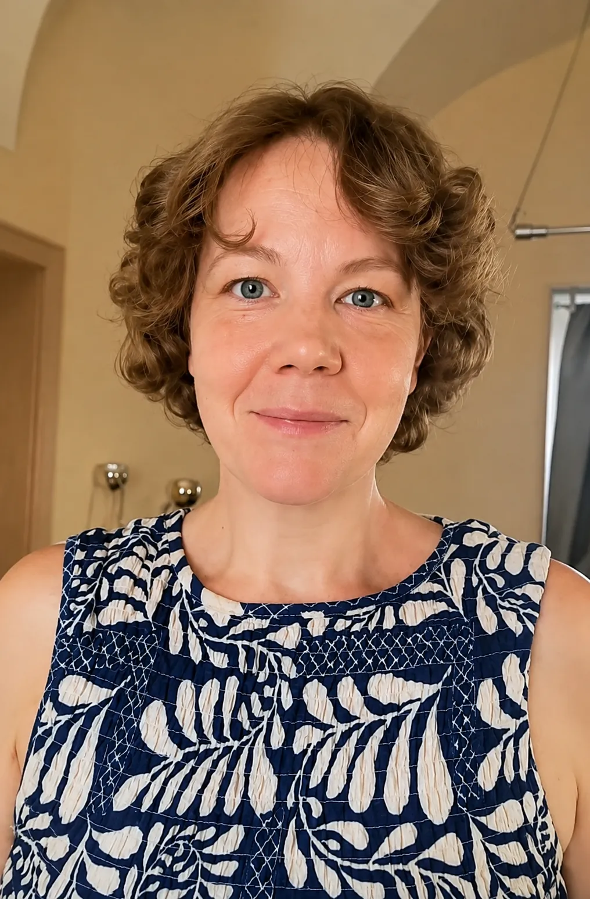

Ich halte Räume für dich und öffne Türen – du findest deine eigenen Antworten, verbindest dich selbst mit deiner Seele, erlebst eigenständig dein höheres Selbst.
Ich bin kein Medium. Ich channele nicht. Ich habe keine telepathischen Fähigkeiten. Mein Fokus liegt darauf, energetische Räume aufzubauen und zu halten – so zum Beispiel den Raum, der dir hilft, auf eine höhere Daseinsebene zu reisen.
Ich bin mehr wie ein kurzzeitiger Begleiter – du triffst aber zu jedem Zeitpunkt die Entscheidung, ob du weitergehen möchtest, welche Fragen du stellen möchtest, welche Energien dich interessieren, mit welchen Wesen du sprechen möchtest. Ich bin eine helfende Hand und kein Lehrer, kein spiritueller Führer, kein Vermittler der geistigen Welt.
Die Reise auf höhere Ebenen kann selbstverständlich zum Selbstzweck angewandt werden: Du reist, weil es dich interessiert. Aber die für mich viel wichtigere Bedeutung der höheren Ebenen ist die Möglichkeit, die sie bieten. Eine Möglichkeit ist die Erweiterung des derzeitigen Bewusstseins. Bewusstsein bedeutet, wie gut du dich selbst – deine guten und weniger guten Seiten – sowie dein Umfeld – deine Mitmenschen, aber auch die Gesellschaft, in der wir leben – sehen kannst.
Dann kann dir eine Reise zu den höheren Bestandteilen deiner Selbst helfen. Denn Feststecken kann ein Zeichen dafür sein, dass dir innere Klarheit fehlt. Du spürst intuitiv, dass ein bestimmter Weg nicht funktioniert – kannst aber nicht erkennen, weshalb und welche Alternative es gibt.
Du weißt nicht, ob du Beruf A oder Beruf B wählen sollst? Du hast das Gefühl, die Frage eigenständig beantworten zu wollen – ohne fremde Hilfe? Dann kann es dir helfen, wenn du selbst die Frage in einem erhöhten Bewusstseinszustand stellst.
Du bist nicht abhängig von Philosophen, spirituellen Denkern, Astrologen oder ähnlichen Personen. Du hast immer die Möglichkeit, einfach selbstständig zu erforschen, was in unserer Zeit gerade so vor sich geht. Auf einer höheren Daseinsebene hast du eine Vogelperspektive auf dich selbst und auf die Gesellschaft als Ganzes.
Bei kreativen Menschen sollte die Kreativität immer fließen – aber das trifft nicht immer zu. Hin und wieder steckt man im eigenen Denken fest. Man hat sich aus der eigenen Kreativität herausgedacht. Oder Ängste, Sorgen, Selbstkritik verhindern den kreativen Fluss. Eine vollkommen unterschätzte Fähigkeit der höheren Daseinsebenen ist die Möglichkeit, sich mit der Kreativität selbst zu verbinden. Wieder in den Seinsfluss zurückzukehren.
Mein energetisches Arbeiten liegt weniger im handwerklichen Tun – wie in der Kinesiologie oder im Handauflegen – als vielmehr im Halten energetischer Zustände, die dein Bewusstsein verändern.
Wie wir uns selbst, die Welt und unser Umfeld sehen, hängt stark vom Grad unseres Bewusstseins ab. Ich würde davon abraten, Bewusstsein um des Bewusstseins willen zu erwerben, denn echter Bewusstseinserwerb führt immer auch dazu, den eigenen Schatten zu erkennen.
Mehr Bewusstsein führt nicht immer zu einer Lösung des Problems – ganz im Gegenteil. Echtes Bewusstsein zeigt uns gelegentlich jene Bereiche, die schwierig oder gar nicht zu lösen sind. Genau deshalb meiden wir oft mehr Bewusstsein: Wir wollen nicht sehen, was wir nicht ändern können.
Doch wenn du im Leben feststeckst und erkennst, dass genau dieses Nichterkennen zu Problemen führt, dann kann mehr Bewusstsein vielleicht ein notwendiger Schritt sein.

Mein Arbeiten ist außerdem darauf ausgerichtet, dich in deine Selbstermächtigung zu führen. Ich halte bestimmte energetische Räume – wie die Seelenebene, den Kristallraum, bestimmte Sternenenergien und weitere Orte –, doch du betrittst sie ohne mich.
Die Fragen, die du dort stellst, sind deine Fragen – nicht meine. Das, was du dort wahrnimmst, ist deine Wahrnehmung und nicht meine. Die Erkenntnisse, die du dort gewinnst, sind deine und nicht meine. Die Verbindungen, die du dort aufbaust – zu den Energien, zu Teilen deiner Selbst auf diesen Ebenen, zu anderen Wesen – sind deine Verbindungen.
Unsere gemeinsame Arbeit beginnt mit einer geführten Meditation – allerdings keiner gewöhnlichen Wohlfühlmeditation, sondern einer esoterischen. Bei einer Wohlfühlmeditation geht es darum, dass du dich wohlfühlst. Bei einer esoterischen Meditation arbeite ich mit den vorhandenen Energien, um bestimmte Daseinsebenen zu erreichen. Diese, wie die Seelenebene, erlauben wiederum erweiterte Bewusstseinszustände.

Das bedeutende Wort im letzten Satz ist jedoch „erlauben“. Nur weil du in den Kristallraum reist, heißt das nicht, dass du augenblicklich mehr Erkenntnis gewinnst und im Alltag klarer siehst. Es braucht gelegentlich Zeit und Geduld, bis sich Bewusstsein erweitert. Deshalb erhältst du die gemeinsame esoterische Meditation immer auch als Audiodatei, damit du sie erneut anhören kannst.

Verena Johanna Polzhofer
Du kannst mich auch auf WhatsApp, Signal oder Telegram erreichen. Schicke mir eine kurze Nachricht und einen guten Zeitpunkt, um dich zurückzurufen.
Schreib mir eine Nachricht